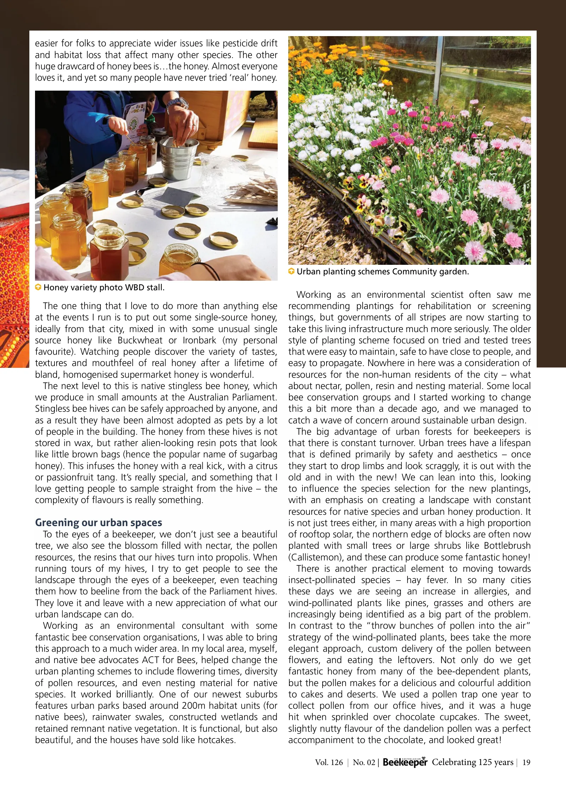

The one thing that I love to do more than anything else
at the events I run is to put out some single-source honey,
ideally from that city, mixed in with some unusual single
source honey like Buckwheat or Ironbark (my personal
favourite). Watching people discover the variety of tastes,
textures and mouthfeel of real honey after a lifetime of
bland, homogenised supermarket honey is wonderful.
The next level to this is native stingless bee honey, which
we produce in small amounts at the Australian Parliament.
Stingless bee hives can be safely approached by anyone, and
as a result they have been almost adopted as pets by a lot
of people in the building. The honey from these hives is not
stored in wax, but rather alien-looking resin pots that look
like little brown bags (hence the popular name of sugarbag
honey). This infuses the honey with a real kick, with a citrus
or passionfruit tang. It’s really special, and something that I
love getting people to sample straight from the hive – the
complexity of flavours is really something.
Greening our urban spaces
To the eyes of a beekeeper, we don’t just see a beautiful
tree, we also see the blossom filled with nectar, the pollen
resources, the resins that our hives turn into propolis. When
running tours of my hives, I try to get people to see the
landscape through the eyes of a beekeeper, even teaching
them how to beeline from the back of the Parliament hives.
They love it and leave with a new appreciation of what our
urban landscape can do.
Working as an environmental consultant with some
fantastic bee conservation organisations, I was able to bring
this approach to a much wider area. In my local area, myself,
and native bee advocates ACT for Bees, helped change the
urban planting schemes to include flowering times, diversity
of pollen resources, and even nesting material for native
species. It worked brilliantly. One of our newest suburbs
features urban parks based around 200m habitat units (for
native bees), rainwater swales, constructed wetlands and
retained remnant native vegetation. It is functional, but also
beautiful, and the houses have sold like hotcakes.
Honey variety photo WBD stall.
Urban planting schemes Community garden.
easier for folks to appreciate wider issues like pesticide drift
and habitat loss that affect many other species. The other
huge drawcard of honey bees is…the honey. Almost everyone
loves it, and yet so many people have never tried ‘real’ honey.
Working as an environmental scientist often saw me
recommending plantings for rehabilitation or screening
things, but governments of all stripes are now starting to
take this living infrastructure much more seriously. The older
style of planting scheme focused on tried and tested trees
that were easy to maintain, safe to have close to people, and
easy to propagate. Nowhere in here was a consideration of
resources for the non-human residents of the city – what
about nectar, pollen, resin and nesting material. Some local
bee conservation groups and I started working to change
this a bit more than a decade ago, and we managed to
catch a wave of concern around sustainable urban design.
The big advantage of urban forests for beekeepers is
that there is constant turnover. Urban trees have a lifespan
that is defined primarily by safety and aesthetics – once
they start to drop limbs and look scraggly, it is out with the
old and in with the new! We can lean into this, looking
to influence the species selection for the new plantings,
with an emphasis on creating a landscape with constant
resources for native species and urban honey production. It
is not just trees either, in many areas with a high proportion
of rooftop solar, the northern edge of blocks are often now
planted with small trees or large shrubs like Bottlebrush
(Callistemon), and these can produce some fantastic honey!
There is another practical element to moving towards
insect-pollinated species – hay fever. In so many cities
these days we are seeing an increase in allergies, and
wind-pollinated plants like pines, grasses and others are
increasingly being identified as a big part of the problem.
In contrast to the “throw bunches of pollen into the air”
strategy of the wind-pollinated plants, bees take the more
elegant approach, custom delivery of the pollen between
flowers, and eating the leftovers. Not only do we get
fantastic honey from many of the bee-dependent plants,
but the pollen makes for a delicious and colourful addition
to cakes and deserts. We used a pollen trap one year to
collect pollen from our office hives, and it was a huge
hit when sprinkled over chocolate cupcakes. The sweet,
slightly nutty flavour of the dandelion pollen was a perfect
accompaniment to the chocolate, and looked great!
Vol. 126 | No. 02 |
Celebrating 125 years | 19